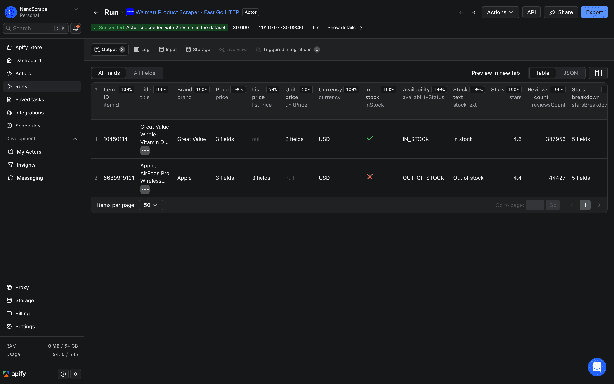
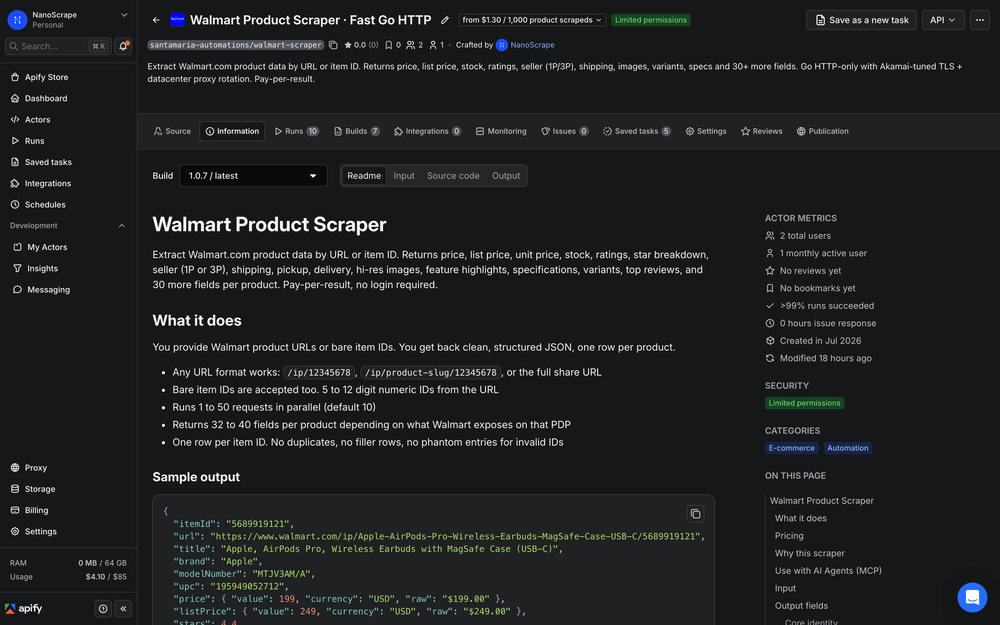
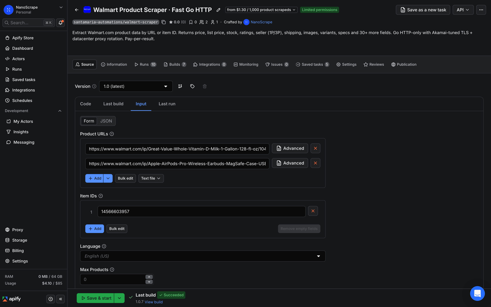
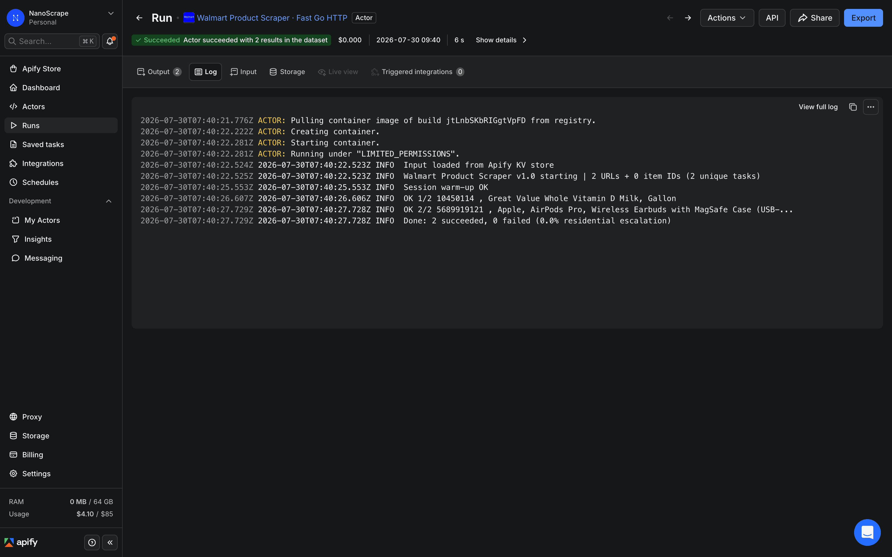

How to Scrape Walmart Product Data: Prices, Stock, and Reviews
A practical guide to pulling structured product data from Walmart.com using the NanoScrape Walmart Product Scraper on Apify. Provide product URLs or bare item IDs and get back price, list price, unit price, stock status, star ratings, seller type (1P vs 3P), shipping, pickup availability, high-resolution images, feature highlights, specifications, variants, and top reviews. The actor runs in Go, uses no browser, and costs about $1.30 per 1,000 products.

In this tutorial
What you get
Each run returns one JSON object per Walmart product. The object includes 32 to 40 fields pulled directly from Walmart's internal __NEXT_DATA__ JSON block, so values come out clean with no fragile CSS selectors and no stray currency symbols.
- Pricing:
price,listPrice(struck-through price when on sale),unitPrice(with unit label such as cents per fl oz). - Stock and availability:
inStock,availabilityStatus(IN_STOCK,OUT_OF_STOCK, orLIMITED_STOCK),stockText. - Ratings:
stars,reviewsCount,starsBreakdown(five-way histogram as fractions),answeredQuestions. - Seller:
sellerType(1Pfor sold by Walmart or3Pfor a marketplace seller),seller.name,seller.id,seller.url. - Fulfillment:
shipping(method, cost, estimated days),pickup(store availability),delivery(home delivery estimate). - Content:
title,brand,description,features,specifications,breadCrumbs,highResolutionImages. - Badges:
isRollback,isClearance,isFlashDeal,isBestSeller. - Variants and reviews:
variantDetails(per-variant item IDs with prices and availability),topReviews(up to 8 reviews with stars, text, author, and date).
{
"itemId": "5689919121",
"url": "https://www.walmart.com/ip/Apple-AirPods-Pro-Wireless-Earbuds-MagSafe-Case-USB-C/5689919121",
"title": "Apple, AirPods Pro, Wireless Earbuds with MagSafe Case (USB-C)",
"brand": "Apple",
"modelNumber": "MTJV3AM/A",
"price": { "value": 199, "currency": "USD", "raw": "$199.00" },
"listPrice": { "value": 249, "currency": "USD", "raw": "$249.00" },
"stars": 4.4,
"reviewsCount": 44416,
"starsBreakdown": { "5star": 0.777, "4star": 0.073, "3star": 0.031, "2star": 0.021, "1star": 0.097 },
"inStock": true,
"availabilityStatus": "IN_STOCK",
"seller": { "name": "Walmart.com", "type": "1P" },
"sellerType": "1P",
"categoryPath": "Electronics / Wireless / Headphones",
"scrapedAt": "2026-07-30T09:12:44Z"
}listPrice appears only when the product is on sale and unitPrice appears only on consumables and bulk goods. Missing fields are expected behavior, not extraction errors.Prerequisites
- A free Apify account. Sign up at the actor page. Every account gets $5 of free monthly usage credit, enough for about 3,700 Walmart products.
- At least one Walmart product URL or item ID to scrape. You can find item IDs in any Walmart product URL, for example
https://www.walmart.com/ip/product-name/10450114.
Open the actor and sign up
- Open the NanoScrape Walmart Product Scraper on Apify.
- Click Try for free. Sign up with Google or email. The free tier includes $5 of monthly credit with no payment method required to get started.
- Once signed in, click Try for free again on the actor page. The Apify Console opens with the input form pre-loaded and ready to fill in.

Add product URLs or item IDs
The actor accepts two types of input. Use startUrls for product page links, or itemIds for bare numeric item IDs. Both inputs can be combined in the same run and duplicates are removed automatically.
Using product URLs
Paste one or more Walmart product page links into the Start URLs field. Any URL format works: /ip/12345678, /ip/product-slug/12345678, or the full share URL copied from a browser.
{
"startUrls": [
{ "url": "https://www.walmart.com/ip/Great-Value-Whole-Vitamin-D-Milk-1-Gallon-128-fl-oz/10450114" },
{ "url": "https://www.walmart.com/ip/Apple-AirPods-Pro-Wireless-Earbuds-MagSafe-Case-USB-C/5689919121" }
]
}Using bare item IDs
If you have a list of item IDs (the 5 to 12 digit number at the end of any Walmart URL), paste them into the Item IDs field, one per line. This is the faster input method when you already have a SKU catalog.
{
"itemIds": ["10450114", "5689919121", "14566603957", "2513765448"]
}
Configure optional settings
All settings below are optional. The defaults work well for most use cases.
- language:
en-US(default) ores-US. Switches the page copy to Spanish. The underlying catalog is the same. - zipCode: a 5-digit US ZIP code. Sets the delivery region shown on the product page, which affects displayed price on regional promotions and the pickup and delivery availability fields.
- scrapeReviewSample:
true(default). Includes up to 8 top reviews per product in thetopReviewsfield. - scrapeVariants:
true(default). Includes the list of sibling variant item IDs with their prices and availability invariantDetails. - maxItems: caps the total number of products scraped this run. Leave at
0for unlimited. - concurrency: parallel requests, 1 to 50. The default of 10 is the recommended sweet spot. Higher values increase speed but also increase the rate of transient Akamai blocks, which the actor retries automatically.
zipCode to the ZIP code of your target market to see the price and delivery estimate a local shopper would see. Prices vary for some regional promotions.Run and download results
Click Save and Run at the bottom of the form. A progress log appears on the right side of the Console. Most runs finish in under 30 seconds for a handful of products.

Open the Dataset tab to see results in a table. Click Export at the top right to download:
- JSON for code, databases, or automation tools like n8n, Make, and Zapier.
- CSV for Google Sheets, Excel, or Airtable.
- JSONL for streaming pipelines and large result sets.
product node in the internal data block. The actor detects this and skips the item without charging you for it.Automate with the API
Call the actor from your own code or data pipeline using the Apify REST API. Replace YOUR_TOKEN with the Personal API token found in Apify Console, under Settings, then Integrations.
curl -sS -X POST \
'https://api.apify.com/v2/acts/santamaria-automations~walmart-scraper/run-sync-get-dataset-items?token=YOUR_TOKEN' \
-H 'Content-Type: application/json' \
-d '{
"itemIds": ["10450114", "5689919121"],
"scrapeReviewSample": true,
"scrapeVariants": false
}'The run-sync-get-dataset-items endpoint starts the actor, waits for it to finish, and returns the full dataset in one HTTP response. For larger batches use the async run endpoint and poll the run status until it reaches SUCCEEDED.
Use with AI agents via MCP
Connect the actor to any MCP-compatible AI client such as Claude Desktop, Claude.ai, Cursor, VS Code, LangChain, or LlamaIndex using the Apify MCP server URL:
https://mcp.apify.com?tools=santamaria-automations/walmart-scraper
Example prompt once connected: "Use walmart-scraper to fetch the current price, rating, stock status, and seller type for Walmart item IDs 10450114, 5689919121, and 14566603957. Return a markdown table with columns: itemId, title, price, stars, reviewsCount, sellerType, stockText." Clients that support dynamic tool discovery such as Claude.ai and Cursor receive the full input schema automatically.
Common use cases
- Repricing: pull
price,listPrice,unitPrice, andisRollbackdaily for a catalog of SKUs. Compare against your own pricing or against competitor listings on other platforms. - Stock monitoring: track
inStock,availabilityStatus,pickup.available, anddelivery.availableto trigger restock alerts or update your fulfillment logic. - 1P vs 3P monitoring: watch
sellerTypeandseller.idto detect when Walmart hands a listing to a marketplace seller. Transitions from1Pto3Poften signal a price change or fulfillment shift. - Competitive intelligence: compare
stars,reviewsCount,starsBreakdown, andtopReviewsacross competing item IDs to benchmark product quality and customer sentiment. - Rollback tracking: filter by
isRollback: trueand calculate the ratio oflistPricetopriceto find live Walmart promotions and temporary price cuts. - Catalog enrichment: pull
features,specifications,shortDescription, andhighResolutionImagesto populate your own product feed without manual copy work. - Variant discovery: use
variantDetailsto enumerate all sibling SKUs of a parent listing with their prices and availability. Pass the variant IDs in a follow-up run to enrich each one separately.
What it costs
- Actor start: $0.001 per run. The actor uses 128 MB of RAM, so each run costs $0.001 to start regardless of how many products you request.
- Per product: $0.0013 per result returned. Invalid or delisted item IDs that return no data are not charged.
- In practice: 1,000 products costs about $1.30 total (start fee plus per-result cost). The $5 free monthly credit covers roughly 3,700 products.
maxItems to 5 on your first run to verify your input is correct before scaling up. Five products costs less than one cent.FAQ
Do I need a paid Apify plan?
No. Every Apify account gets $5 of free usage credit each month. At $0.0013 per product, the free tier covers roughly 3,700 Walmart products per month before you need to add a payment method.
Can I use bare item IDs instead of full URLs?
Yes. Pass numeric item IDs (5 to 12 digits) in the itemIds field. You can find the item ID in any Walmart product URL as the number at the end of the path. You can also mix startUrls and itemIds in the same run; duplicates across the two fields are removed automatically.
What does the sellerType field tell me?
sellerType is 1P when Walmart itself sells and ships the product, and 3P when a marketplace seller fulfills it. Third-party listings often have different prices, return policies, and reliability than first-party Walmart listings. Monitoring sellerType lets you detect when Walmart hands a listing to a marketplace seller, which frequently precedes a price increase.
Does the actor return customer reviews?
Yes, when scrapeReviewSample is true (the default). The topReviews field returns up to 8 top reviews per product, each with star rating, title, author name, date, and body text. This field is situational: it is null on products with no reviews.
Can I set a ZIP code to see local prices and availability?
Yes. Set the zipCode field to a 5-digit US ZIP code. This sets the delivery region shown on the product page, which affects the displayed price for regional promotions, the pickup store, and the delivery availability fields. It does not affect the base price for most products.
Is scraping Walmart legal?
Scraping publicly available data is generally permitted in most jurisdictions. The hiQ Labs v. LinkedIn ruling in the US established that scraping public data does not violate the Computer Fraud and Abuse Act. Walmart's Terms of Service restrict automated access, so use the data for research, price monitoring, and analytics rather than republishing Walmart content in bulk. Consult a lawyer for specific compliance questions.
Related resources
- Walmart Product Scraper on Apify: Full actor documentation with all input fields, output field reference, and pricing details.
- How to Scrape eBay Product Listings: Companion tutorial for scraping eBay active listings across 8 regional marketplaces. Useful for cross-platform price comparison.